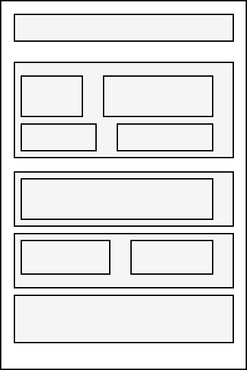
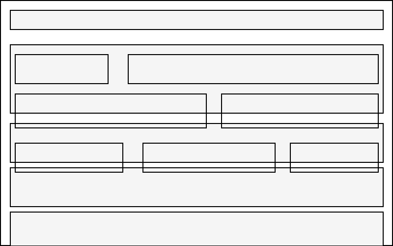

1. Site Name
Name: CityCab Transit Management
Reason: This name clearly identifies the platform as a dynamic local taxi and transport management service for city commuters.
2. Site Purpose
The site provides a simple digital platform for passengers and fleet operators to check taxi routes, estimate trip fares, view contact details, and access mobile payment choices.
3. Scenarios
- How do I calculate or estimate the fare for my route?
- Where can I find the direct phone number or support contact for taxi service inquiries?
4. Color Scheme
This page uses the selected site color scheme:
- Primary Color (#003366 - Deep Blue): Used for headers, top navigation, and primary button backgrounds.
- Accent Color (#F4B400 - Warm Yellow): Used for highlights, active links, and call-to-action elements.
- Background Color (#F9F9F9 - Off-White): Used for the main body content area to keep readability high.
5. Typography
- Roboto (Bold / Normal): Applied to all section headers (
<h1>,<h2>). - Open Sans: Applied to standard paragraph body text and list items.
6. Wireframes
Hand-drawn wireframe sketches for the homepage layout:
Small Viewport (Mobile)

Large Viewport (Desktop)
